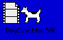

Legacy Document
Important: This document is part of the Legacy section of the ADC Reference Library. This information should not be used for new development.
Current information on this Reference Library topic can be found here:
ADC Home > Reference Library > Technical Notes > Legacy Documents > QuickTime >
Important: This document is part of the Legacy section of the ADC Reference Library. This information should not be used for new development.
Current information on this Reference Library topic can be found here:
|
Brian's Bechtel's Nest of Dogcattle Web PageDTS engineer Brian Bechtel has been the guardian of Dogcow history, creating and maintaining a great Web page, entitled "A nest of Dogcattle," with a compendium of links to documents that detail the wonderful history of the Dogcow. Check it out! The history is explained in, among other places, two issues of develop, #17 and #18. Point your browsers to Brian's Web page, which is must-reading for all Apple developers who want to keep up with Dogcow lore. Dogcow's Growth & QuickTime Movie StardomThe Dogcow has certainly grown by leaps and bounds over the years, starting out as a character in the original Cairo font designed by Susan Kare. Figure 1 shows Clarus, christened by Mark Harlan in 1989, as a trademarked icon in Apple's printer driver Page Setup dialog boxes. Growing Up Ain't That Hard to DoFigure 1 shows Clarus growing up from the Cairo font to reach Page Setup size and status. Figure 1. The Dogcow in its Page Setup size Figure 2 shows the Dogcow flexing her "FatBits," as it were, and getting bigger. Figure 2. The Dogcow flexing her FatBits Figure 3 shows the Dogcow becoming even larger than the largest known DTS engineer, Dave Polaschek, and appearing along the way as a "lawn creature" on the Apple R & D campus in Cupertino, California. Figure 3. The Dogcow surpassing the size of the largest known DTS engineer and appearing as a lawn creature on the R & D campus. The Dogcow Gets Small and AcrobaticRand Crippen, a QuickTime for Windows DTS engineer, found this QuickTime movie, entitled Moofie.MOV, which takes Clarus down to the size of a spinning cursor. This must be the smallest size yet conceived for Clarus. Have you seen anything smaller? Click on the QuickTime movie icon to download the Moofie.MOV file. It's only 32K in size. Note the sound effects and backflips performed by the tiny Clarus. Moof SightingsThe image of the Dogcow has traveled far and wide, both in and out of cyberspace, appearing on everything from coffee mugs and T-shirts to e-mail and technical documentation. Life has been good for the Dogcow. An incorrect FatBits version of the Dogcow in Macintosh Technote 1019 - "Plotting Small Icons: The 'SICN' Resource" is shown in Figure 4. Note, according to DTS engineer Ray Chiang, that it appears like a Dogcow puppy because the proportions are different. Did the Dogcow actually have progeny? Hmmmm. Figure 4. An incorrect FatBits version of the Dogcow The Dogcow Goes to Work!What a trooper! The Dogcow has been put to work carrying a filing cabinent of archived Technotes. This is quite an accomplishment for a two-dimensional object; note that the filing cabinet is a three-dimensional object. The filing cabinet originally had no belt wrapped around it as it does now. Mike Marinkovich, a prodigiously talented DTS engineer, suggested in a flash of brilliance that a belt was necessary. So we had one custom tailored by a belt manufacturer, just for Clarus. The belt extended all the way around Clarus's belly. But after a lengthy debate among DTS engineers and managers, it was decided that no belt was necessary after all! Figure 5 shows the Dogcow performing extra duty, archiving the 350 "old" Macintosh Technical Notes. Figure 5. The Dogcow, hearty soul, archiving the "old" Technotes MoofMail, a Routine Part of Everyday DTS LifeLots of e-mail, or MoofMail, as it is better known, gets sent everyday, as shown in Figure 6.
Guillermo's Classic Dogcow Roll & Dogcow Merry-Go-Round QuickTime MoviesGuillermo Ortiz, DTS's multimedia, printing, imaging and graphics (MPIGs) guru, contributes four great QuickTime movies with Clarus as the star! You must check these out. These were originally samples that appeared in Issue #7 of develop as part of the article entitled QuickTime 1.0: "You Oughta Be in the Movies." Figure 7. A screen from Guillermo's classic Dogcow Merry-Go-Round
The first movie, Dogcow Roll, includes two versions: one with sound, one without sound. The second movie, Dogcow Merry-Go-Round, also comes with two versions, again, one with sound, one without. You'll need the QuickTime Movie Player to play these. Be sure that you have it installed on your system. Dogcow Roll with sound (829K in size) Dogcow Roll without sound (649K in size) DogcowMerry-Go-Round with sound (1.1 MB in size) Dogcow Merry-Go-Round without sound (1 MB in size) The Dogcow Goes QuickTime VRIn an effort over a single weekend, George Warner, another prodigiously talented DTS engineer, created with the help of Joel Cannon, DTS's resident QuickTime VR guru, an absolute marvel: the first VR Dogcow movie. The techniques for doing this are explained in the VR Cookbook. Here is the finished DogCow.MoofVR movie (352K in size) for you to download: You'll also need the QuickTime VR Player to play the movie, which you can download from Apple's QuickTime VR Website at http://www.apple.com/quicktime/qtvr/index.html. A Cookbook for Creating the DogCow.MoofVR MovieWhat follows is a cookbook, with a couple of recipes, for creating your own QuickTime VR object movie. George Warner and I have worked through the ingredients and steps involved, using an image processing tool, a 3D rendering package, and Adobe Premiere. Step #1The first thing you want to do is get a PICT of the Dogcow. You need the high-resolution version. Using Resedit, you can grab the PICT resource -8187 from the LaserWriter 8 driver. Figure 8 shows you the Dogcow in a PICT resource. Figure 8. Dogcow as PICT resource -8187 Step #2Using an image processing tool, such as Adobe PhotoShop or Dazzler, you need to create four PICT files:
Use the Dogcow PICT that you saved in the previous step to create the Dogcow mask. The grass is just a green circle; the mask is a black circle. Figure 9 shows you the four PICT files you need to create. Figure 9. Four PICTs you need to create, with masks of the Dogcow and grass. Step #3Using a 3D Modeling and Rendering package, such as INFINI-D or StrataVision, you want to create two rectangle objects for the Dogcow standing on the grass. Use the masks and pictures generated in Step #2 to generate the surfaces of the objects. The masks are used as part of the textures to show where the objects are transparent. You should now have four objects in your scene:
Figure 10 shows you the Dogcow standing the grass. Figure 10. The Dogcow standing on the grass. Step #3a: Some Choices You Need to MakeYou now have to make some choices (George's choices are shown in parentheses). These include the following:
These options tradeoff resolution against memory size or performance. The bigger the screen size, or the greater the number of frames, the more memory required. The fewer the frames, the coarser the results. Step #4What QuickTime VR expects is an array of frames, rows and columns. To generate those, you need to create a movie for every row and then paste them together into a single movie. Starting at the top of your object, record a movie of one rotation. Move the camera down 10deg. and point it at the Dogcow. Move the camera down 10deg., point it at the Dogcow, and record another full rotation. Repeat this until you're at the bottom of the object. You now have 19 movies of 36 frames each. Using MoviePlayer or Adobe Premiere, paste all of these into a single movie and save it flattened. You now have 36 frames/revolution for 19 revolutions for a total of 684 frames. Step #5Drag this movie and drop it on the "Make QTVR Object 1.0b1" application. Press Command-1 to add object data to the movie, as shown Figure 11.
Figure 11. Add Object Data dialog Step #6Hit the OK button and enjoy! Step #7Go to lunch, or depending on your time zone, dinner. A Sidebar: How George Did Texture Maps in Infini-DTo add surface for the Dogcow and the grass, use a mask layer to set the transparency. Import the Dogcow mask generated in Step #2. Set mapping mode to Copy and the repeat to H: 1, V: 1. Also set the transparency to 100% and invert. Now import the Dogcow PICT from Step #2 as the second layer. This layer will be in mapping mode Reveal, and the repeat is H: 1, V: 1, with no transparency, and no invert. The grass surface is generated the same way, using the appropriate pictures from Step #2. Figure 12. Infini-D Surface Composition dialog Downloadables
|
|